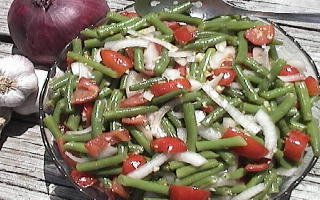

GREEN BEAN SALAD
- 1 POUND GREEN BEANS - CUT (about 4 cups)
- 1 1/2 CUPS TOMATOES - QUARTERED
- 1 CUP ONION QUARTERED AND SLICED
- 2 TBS. GARLIC - MINCED
- 3 TBS. OLIVE OIL
- 1 tsp. SALT
- PINCH OF BLACK PEPPER
TRIM THE BEANS AND CUT INTO TWO INCH PIECES. STEAM UNTIL TENDER-CRISP, ABOUT 7 MINUTES. PLACE IN AN ICE WATER BATH TO END COOKING PROCESS, AND ALLOW TO COOL. DRAIN WELL, THEN LIGHTLY PAT BEANS DRY WITH A PAPER TOWEL AND PLACE IN A LARGE MIXING BOWL. ADD TOMATOES, ONIONS, GARLIC, OIL, AND SALT. MIX WELL, COVER, AND CHILL AT LEAST ONE HOUR. TASTE AND ADJUST THE SEASONINGS IF NECESSARY, THEN PLACE IN A SERVING BOWL AND ENJOY!
NOTE: VARIATIONS ON THIS RECIPE MIGHT INCLUDE: YELLOW WAX BEANS, ITALIAN ROMA BEANS, FRENCH FILET BEANS, AND ANY VARIETIES OR COLORS OF TOMATOES OR PEPPERS.
NOTE: SERVE FRESH OR ALLOW THE SALAD TO MARINATE OVERNIGHT IN THE REFRIGERATOR TO SOFTEN THE TEXTURE AND IMPROVE THE FLAVOR!
MAKES APPROX. 6 SIDE SERVINGS.